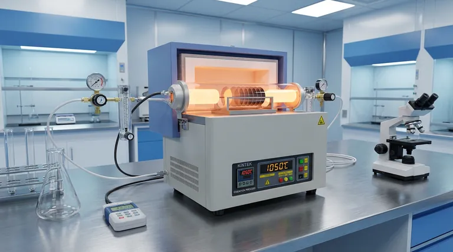
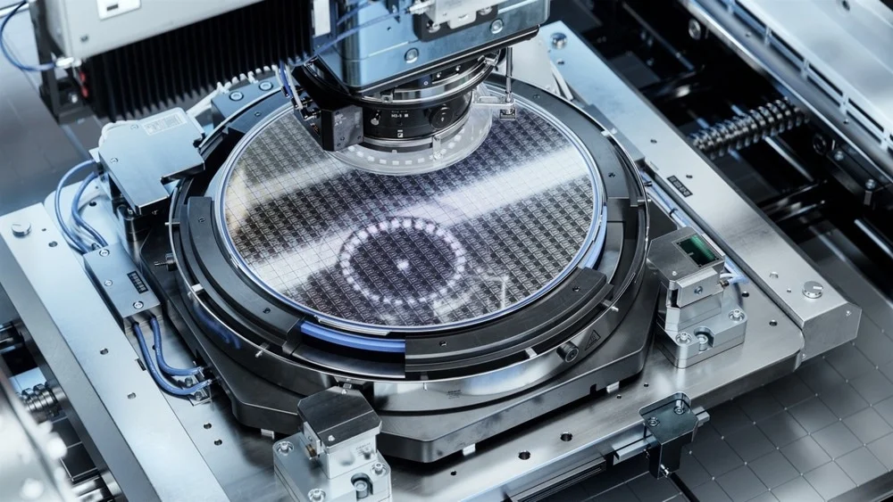
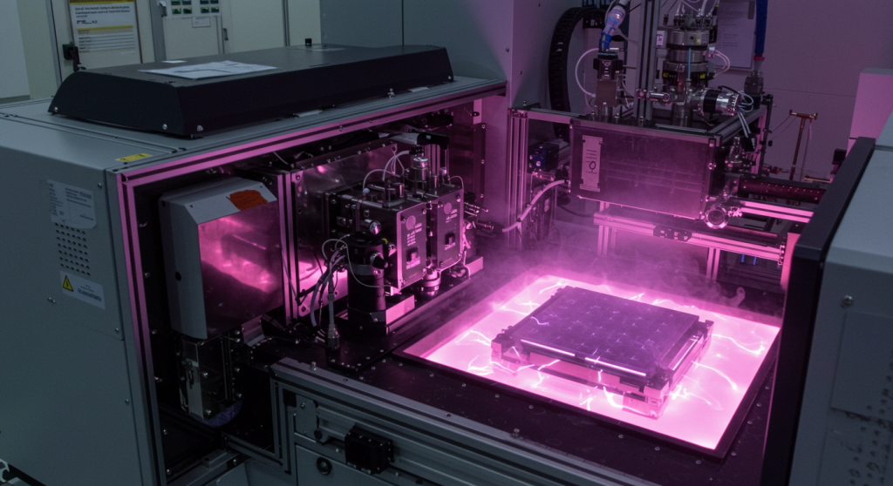
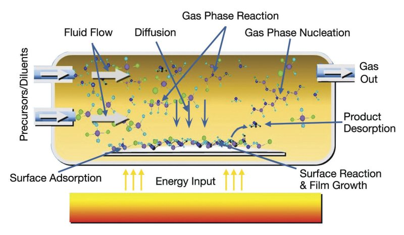
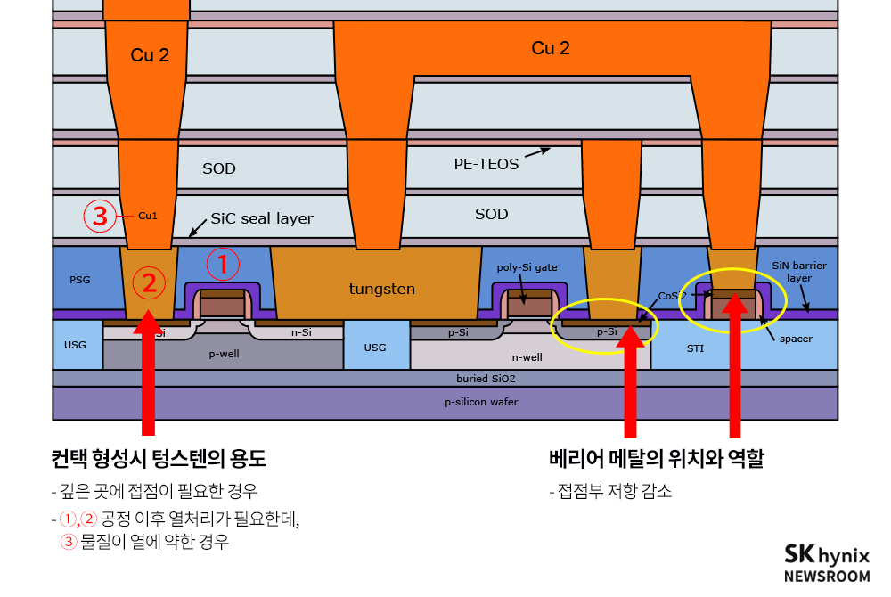
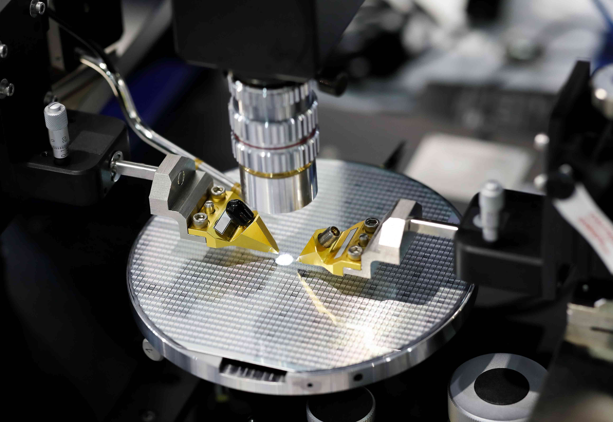
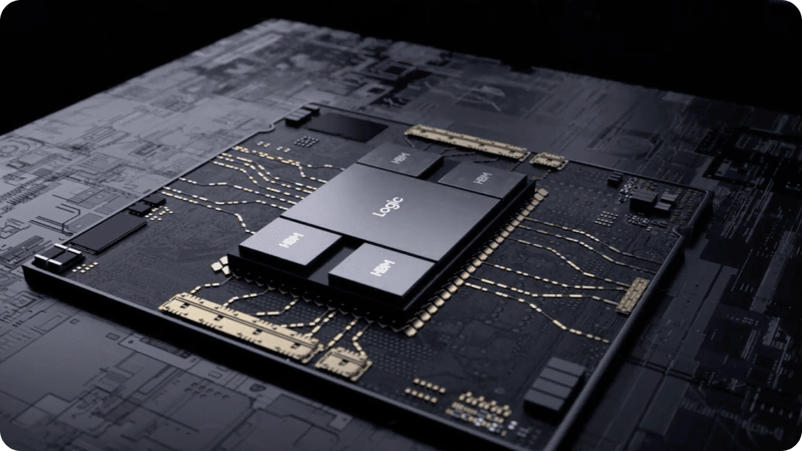

반도체 8대 공정
반도체는 여러 공정을 거쳐 웨이퍼 위에 미세한 회로를 형성하여 제작됩니다. 대표적인 8대 공정은 다음과 같습니다.

01. 웨이퍼 제조 (Wafer Manufacturing)
실리콘을 이용해 반도체 회로를 형성할 기초 재료인 웨이퍼를 제작하는 과정입니다.

02. 산화 공정 (Oxidation)
웨이퍼 표면에 산화막(SiO₂)을 형성하는 과정입니다. 산화막은 전기적 절연, 표면 보호 및 소자 간 분리 등의 역할을 합니다.

03. 포토 공정 (Photolithography)
웨이퍼 표면에 감광액(Photoresist)을 도포한 후 빛을 이용해 마스크의 회로 패턴을 전사하는 과정입니다. 미세한 반도체 회로를 형성하는 핵심 공정입니다.

04. 식각 공정 (Etching)
포토 공정에서 형성한 패턴을 기준으로 불필요한 박막을 선택적으로 제거하는 과정입니다. 플라즈마를 이용하는 건식 식각과 화학 용액을 이용하는 습식 식각이 있습니다.

05. 증착 및 이온 주입 (Deposition & Ion Implantation)
증착 공정은 웨이퍼 표면에 필요한 박막을 형성하는 과정입니다. 이온 주입 공정은 불순물 이온을 웨이퍼에 주입하여 반도체의 전기적 특성을 조절합니다.

06. 금속 배선 공정 (Metallization)
반도체 소자들을 전기적으로 연결하기 위해 웨이퍼 위에 금속 배선을 형성하는 과정입니다. 구리(Cu), 알루미늄(Al) 등의 금속 재료가 사용됩니다.

07. EDS 검사 (Electrical Die Sorting)
웨이퍼에 형성된 각각의 칩에 전기적 검사를 실시하여 정상 칩과 불량 칩을 구분하는 과정입니다. 검사 결과는 반도체 수율과 품질 관리에 활용됩니다.

08. 패키징 공정 (Packaging)
웨이퍼에서 분리한 반도체 칩을 외부 환경으로부터 보호하고 외부 회로와 전기적으로 연결하는 과정입니다. Wire Bonding, Flip Chip, BGA 등 다양한 패키징 기술이 사용됩니다.